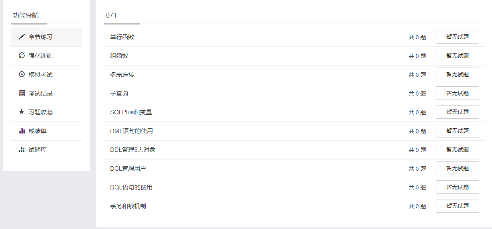
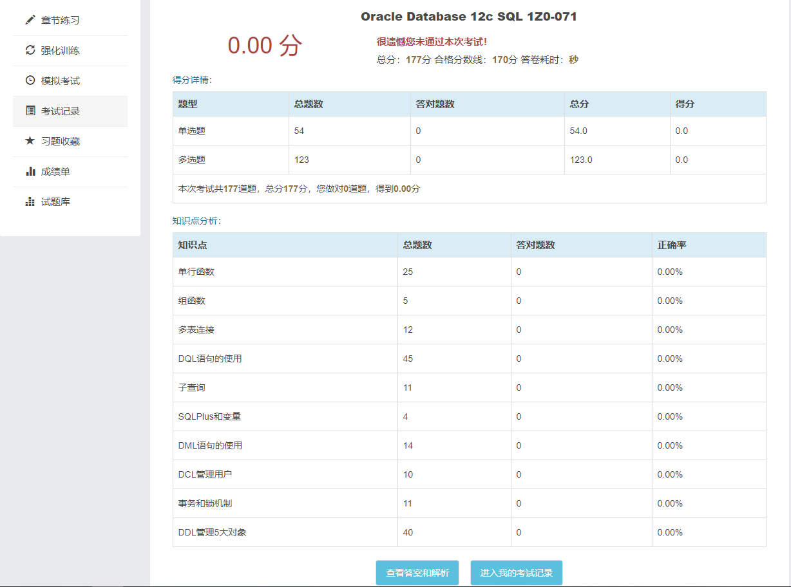

1Z0-071 题目概览
| 编号 | 知识点 | 题目数量 |
|---|---|---|
| 1 | 单行函数 | 25 |
| 2 | 组函数 | 4 |
| 3 | 多表连接 | 13 |
| 4 | 子查询 | 11 |
| 5 | SQLPlus和变量 | 4 |
| 6 | DML语句的使用 | 14 |
| 7 | DDL管理5大对象 | 40 |
| 8 | DCL管理用户 | 10 |
| 9 | DQL语句的使用 | 46 |
| 10 | 事务和锁机制 | 11 |
| 178 |
1Z0-071 考点
考试价格：¥1077 | 时长：120分钟| 及格分数：63％| 78题
关系数据库的概念
- 解释关系数据库的理论和物理方面
- SQL Select语句中与ERD组件相关的子句
- 解释数据库和SQL之间的关系
限制和排序数据
- 在表达式中为运算符应用优先规则
- 限制SQL语句中返回的行
- 使用替代变量
- 使用DEFINE和VERIFY命令
- 排序资料
使用转换函数和条件表达式
- 将NVL，NULLIF和COALESCE函数应用于数据
- 了解隐式和显式数据类型转换
- 使用TO_CHAR，TO_NUMBER和TO_DATE转换函数
- 嵌套多个功能
显示来自多个表的数据
- 使用自联接
- 使用各种类型的联接
- 使用非等值连接
- 使用外部联接
- 了解和使用笛卡尔积
使用SET运算符
- 匹配SELECT语句
- 在设置操作中使用ORDER BY子句
- 使用INTERSECT运算符
- 使用MINUS运算符
- 使用UNION和UNION ALL运算符
管理索引同义词和序列
- 管理索引
- 管理同义词
- 管理序列
管理视图
- 管理视图
使用数据字典视图管理对象
- 使用数据字典视图
使用SQL SELECT语句检索数据
- 使用列别名
- 使用SQL SELECT语句
- 使用串联运算符，文字字符串，替代引号运算符和DISTINCT关键字
- 在SELECT语句中使用算术表达式和NULL值
使用单行功能自定义输出
- 在SQL SELECT和WHERE子句中使用字符函数处理字符串
- 用日期数据执行算术
- 使用ROUND，TRUNC和MOD功能处理数字
- 使用日期函数处理日期
使用组函数报告汇总数据
- 限制小组结果
- 创建数据组
- 使用群组功能
使用子查询解决查询
- 使用单行子查询
- 使用多个行子查询
- 使用相关子查询更新和删除行
使用DML语句管理表
- 管理数据库事务
- 控制交易
- 执行插入，更新和删除操作
- 执行多表插入
- 执行合并语句
使用DDL管理表及其关系
- 描述和使用表
- 描述和使用列和数据类型
- 建立表格
- 删除列并设置列UNUSED
- 截台
- 创建和使用临时表
- 创建和使用外部表
- 管理约束
控制用户访问
- 区分系统特权和对象特权
- 授予表权限
- 区分授予特权和角色
在不同时区管理数据
- 使用CURRENT_DATE，CURRENT_TIMESTAMP和LOCALTIMESTAMP
- 使用INTERVAL数据类型
单行函数
OCP在线模拟考试系统 </div>
自己搭建的LAMP架构的考试系统，有需要的邮件联系我。



部分考题
第 1 题 【 单选题 】
The customers table has a CUST_LAST_NAME column of data type varchar2
The table has two rows whose CUST_LAST_NAME values are Anderson and Ausson. Which query produces output for CUST_LAST_NAME containing Oder for the first row and Aus for the second?
A. SELECT REPLACE (REPLACE (CUST_LAST_NAME,’son’,’’),’AN’,’O’) FROM CUSTOMERS
B. SELECT REPLACE (TRIM (TRAILING ‘son’ FROM CUST_LAST_NAME), ‘AN’,’O’) FROM CUSTOMERS
C. SELECT INITCAP (REPLACE (TRIM (‘SON’FROM CUST_LAST_NAME), ‘AN’,’O’)) FROM CUSTOMERS
D. SELECT REPLACE (SUBSTR (CUST_LAST_NAME, -3), ‘AN’, ‘O’)) FROM CUSTOMERS
正确答案
A
试题解析
考点：单行函数 字符串函数
Anderson and Ausson 转变为
Oder and Aus
观察后，
An 替换为’O’
son 替换为 ‘’
第 2 题 【 单选题 】
The EMPLOYEES table contains columns EMP_ID of data type NUMBER and HIRE_DATE OF DATA TYPE DATE.
You want to display the date of the first Monday after the completion of six months since hiring.
The NLS_TERRITORY parameter is set to AMERICA in the session and, therefore, Sunday is the first day of the week.
Which query can be used?
A. SELECT EMP_ID, NEXT_DAY (ADD_MONTHS (HIRE_DATE, 6),’MONDAY’) FROM EMPLOYEES
B. SELECT EMP_ID, ADD_MONTHS (HIRE_DATE, 6) NEXT_DAY (’MONDAY’) FROM EMPLOYEES
C.SELECT EMP_ID, NEXT_DAY (MONTHS_BETWEEN (HIRE_DATE, SYSDATE), 6) FROM EMPLOYEES
D. SELECT EMP_ID, NEXT_DAY（ADD_MONTHS (HIRE_DATE, 6), 1) FROM EMPLOYEES
正确答案
A
试题解析
考点：单行函数 日期函数
题意 求六个月后的第一个星期一，时区设定一个星期第一天是星期天。
Next_day 指定日期的下一天
分析：A 对 指定 monday
B 错 格式错，不是内嵌函数
C 错 months_between 得出负数
D 错 没有指定星期一